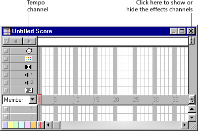
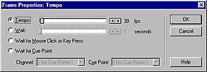

Using Director > Color, Tempo, and Transitions > About tempo > Specifying tempo properties
Using Director > Color, Tempo, and Transitions > About tempo > Specifying tempo properties |
Specifying tempo properties
It's best to begin a movie with a tempo setting in the first cell of the tempo channel. If you don't set a tempo until later in the movie, the beginning tempo is determined by the setting in the Control Panel. Director plays a movie at the tempo you've set until it encounters a new tempo setting in the tempo channel or a puppetTempo command is issued.
Enter tempo changes in the tempo channel at the top of the Score. (If you don't see the tempo channel, the effects channel is hidden. To display it, click the Hide/Show Effects Channel tool in the top right of the score window.)

To specify a tempo setting:
1 |
In the score, do one of the following: |
Double-click the cell in the tempo channel where you want the new tempo setting to appear. |
|
Right-click (Windows) or Control-click (Macintosh) the cell in the effects channel where you want the new tempo setting to appear, and then choose Tempo from the Context menu. |
|
Select a frame in the tempo channel and choose Modify > Frame > Tempo. |
|
If you don't see the tempo channel, the effects channel is hidden. To display it, click the Hide/Show Effects Channel tool in the top right of the Score window. |
|
2 |
Select the option you want to use in the Frame Properties: Tempo dialog box.
 |
To set a new tempo for the movie, use the Tempo arrows or drag the slider. |
|
To pause the movie at the current frame for a certain amount of time, use the Wait arrows or drag the slider. |
|
To pause the movie until the user clicks the mouse or presses a key, select Wait for Mouse Click or Key Press. |
|
To pause the movie until a sound or digital video cue point passes, select Wait for Cue Point and choose a channel and cue point. See Synchronizing media. |
|
3 |
Click OK. |
A number that matches the setting you've chosen appears in the tempo channel. If you can't read the number, you may need to zoom the score. To do so, click the Zoom Menu button at the right edge of the sprite channel or choose View > Zoom. Then choose a percentage from the pop-up menu. |
|